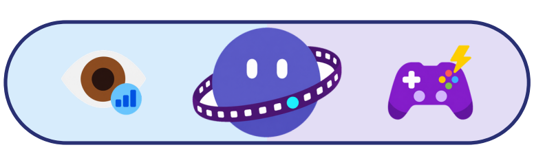
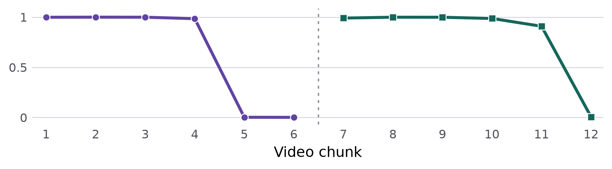
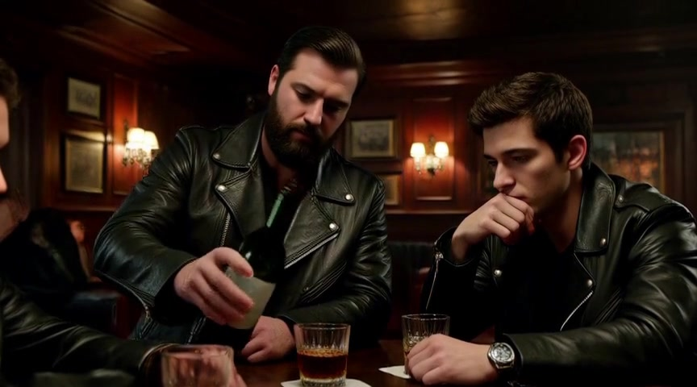
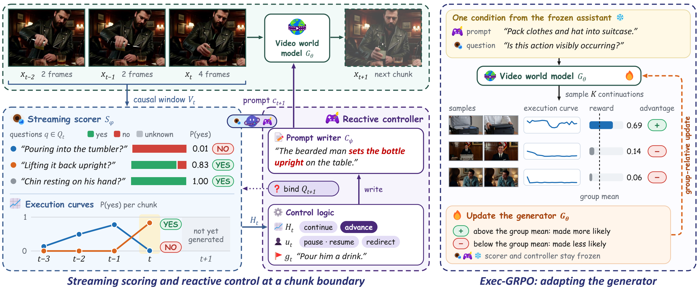
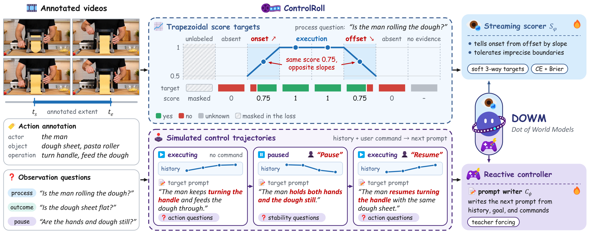

Streaming judgment
Across 7,680 judgments from 120 events, the DOWM scorer reaches 94.6% balanced accuracy with a latency of 142 ms.

A Dot for Interactive Video World ModelsStreaming Execution Feedback and Reactive Control
1 The Hong Kong University of Science and Technology2 Meituan
† Project Leader. Corresponding authors. * Work done during an internship at Meituan.
Narrated walkthrough / 0:18
DOWM watches the motion in each new chunk. It can advance an action plan when the current motion ends, or change the next action when a viewer intervenes.
The walkthrough labels the video generator H3. The paper’s benchmark comparisons use RAVEN, a chunk-level autoregressive generator built on MiniMax H3.
Task-oriented interactive video world models must progress through a plan and respond to instructions that arrive while generation is underway. DOWM (Dot of World Models) pairs a streaming scorer with a reactive controller. At each video chunk, the scorer evaluates questions about an action and its visible outcome. The controller uses the resulting execution curves to continue, pause, revise or advance the action. ControlRoll combines annotated video actions with simulated intervention trajectories to train both modules. Exec-GRPO uses persistence-aware rewards from the frozen scorer to align the causal video generator with the controller’s prompts. On StreamControl-Bench, the scorer achieves 94.6% balanced judgment accuracy in 142 ms, and the full system reaches 80.8% mean task success across autonomous plans and user interventions.
Method
The streaming scorer estimates whether an action is underway or its outcome is visible. A reactive controller reads those judgments and any incoming command, then decides which prompt the video generator receives next.
The first six chunks score hat removal. After two consecutive NO judgments, the question changes to putting the hat back on.


Select a chunk to inspect its final frame and both recorded probabilities.
The scorer and controller share a Qwen3.5-4B backbone with separate LoRA adapters. On a transition, the controller writes the next visual prompt and rules bind its observation questions. Exec-GRPO then updates the RAVEN generator using the frozen scorer’s rewards for motion sustained across adjacent chunks.

Interventions
Choose a scene and an instruction to play its recorded continuation. Each scene starts from the same frames, so you can see how changing the command changes the motion.
Video comparisons
Ten system comparisons share the starting scene, plan and random seed. Two further pairs use the same prompt schedule to isolate changes to the generator. Select a film and use one timeline to inspect both videos.
System comparison
DOWM uses RAVEN tuned with Exec-GRPO. The system baselines use pretrained RAVEN. The local clip- and chunk-level comparisons use Qwen controllers.
ControlRoll
Annotated videos provide action spans for scorer training. The controller learns from ordered actions and simulated event graphs that preserve scene state through pauses, resumptions and changes of goal.
About 11.7K events supply annotated action spans. A process target rises at onset, remains high while an action is visible and falls at cessation. Uncertain visual evidence has a separate UNKNOWN target.

StreamControl-Bench
The end-to-end track contains 200 three-action tasks, half with mid-action interventions. The table gives the mean of three independent VLM evaluators. Decision latency excludes video rendering.
| System | Task success | Command adherence | Visual continuity | Decision latency |
|---|---|---|---|---|
| Open-loop prompting | 29.2% | 35.3% | 3.54 | n/a |
| Clip-level VLM | 40.7% | 49.0% | 3.72 | 4.30 s |
| Chunk-level VLM | 55.8% | 62.3% | 3.78 | 4.73 s |
| DOWM-Base | 63.8% | 72.7% | 3.86 | 0.30 s |
| DOWM | 80.8% | 87.3% | 3.92 | 0.30 s |
Task success requires the full sequence. Command adherence covers the 100 intervention tasks. Continuity is rated from 1 to 5. Latency is the median decision time.
Across 7,680 judgments from 120 events, the DOWM scorer reaches 94.6% balanced accuracy with a latency of 142 ms.
Across 600 control contexts, DOWM reaches 83.0% downstream execution with a shared frozen RAVEN. Command adherence is 96.8% on the 400 intervention contexts.
Twenty participants compared paired videos on 12 intervention tasks per method pair. DOWM’s task-completion preference score against DOWM-Base is 65.4%, with ties counting half.